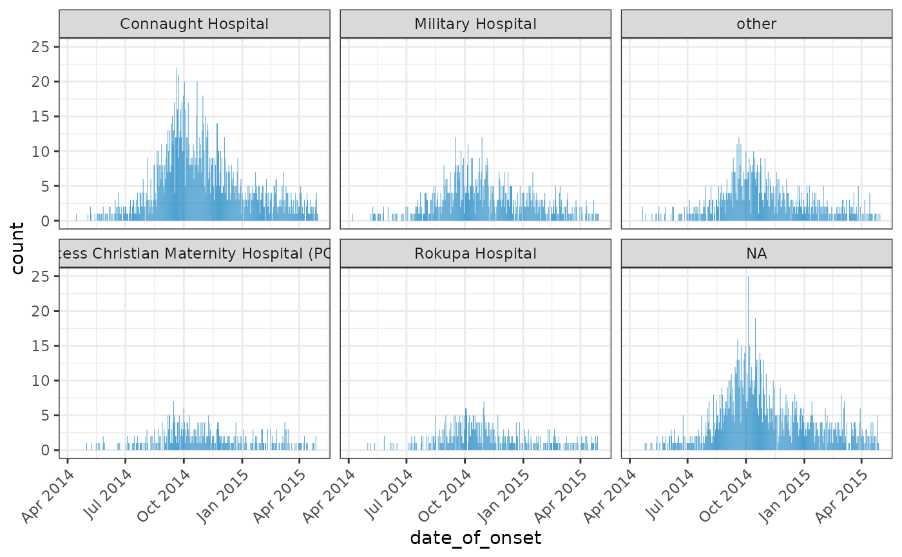
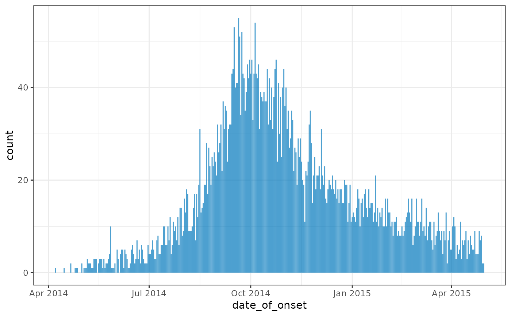

plot() can be used to provide a quick bar plot of an incidence object.
Usage
# S3 method for incidence
plot(
x,
y,
width = 1,
colour_palette = vibrant,
border_colour = NA,
na_color = "grey",
alpha = 0.7,
title = NULL,
angle = 0,
size = NULL,
nrow = NULL,
...
)Arguments
- x
An
incidence()object.- y
Not used.
Required for compatibility with the
plot()generic.- width
[numeric]Value between 0 and 1 indicating the relative size of the bars to the interval.
Default 1.
- colour_palette
[function]The color palette to be used for the different count variables.
Defaults to
vibrant(see?palettes).- border_colour
[character]The color to be used for the borders of the bars.
Use
NA(default) for invisible borders.- na_color
[character]The colour to plot
NAvalues in graphs.Defaults to
grey.- alpha
[numeric]The alpha level for color transparency, with 1 being fully opaque and 0 fully transparent
Defaults to 0.7.
- title
[character]Optional title for the graph.
- angle
[numeric]Rotation angle for text.
- size
[numeric]text size in pts.
- nrow
[integer]Number of rows used for facetting if there are group variables present and just one count in the incidence object.
- ...
Not currently used.
Details
Facetting will occur automatically if either grouping variables or multiple counts are present.
If there are multiple count variables, each count will occupy a different row of the resulting plot.
Utilises ggplot2 so this must be installed to use.
Examples
if (requireNamespace("outbreaks", quietly = TRUE) && requireNamespace("ggplot2", quietly = TRUE)) {
withAutoprint({
data(ebola_sim_clean, package = "outbreaks")
dat <- ebola_sim_clean$linelist
inci <- incidence(dat, date_index = "date_of_onset", groups = "hospital")
plot(inci, angle = 45)
inci2 <- regroup(inci)
plot(inci2)
})
}
#> > data(ebola_sim_clean, package = "outbreaks")
#> > dat <- ebola_sim_clean$linelist
#> > inci <- incidence(dat, date_index = "date_of_onset", groups = "hospital")
#> > plot(inci, angle = 45)

#> > inci2 <- regroup(inci)
#> > plot(inci2)
